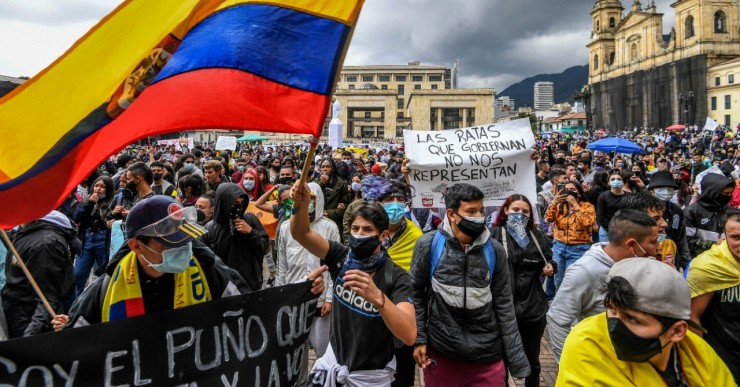
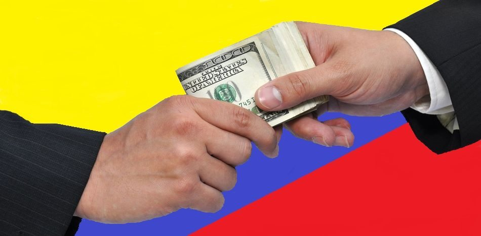
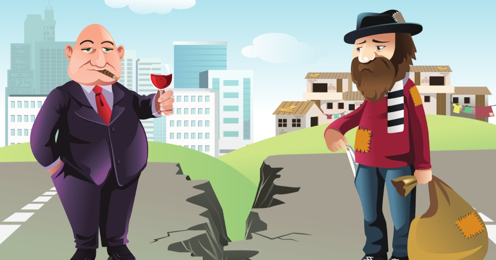
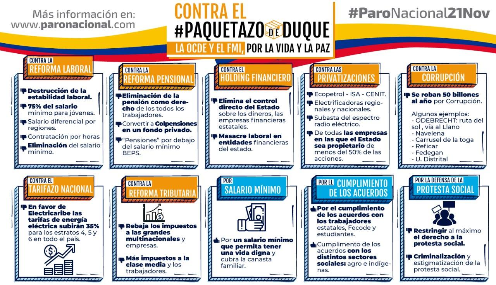

Protestas en Colombia de 2019-2021

Las protestas en Colombia se realizan el 28 de Abril contra el proyecto de reforma tributaria en donde algunas ciudades decretan toque de queda en Cali,
Barranquilla y Medellin ya que algunos sectores politicos rechazan esta propuesta aunque el gobierno esta dispuesto a continuar
Las protestas en Colombia,56 también denominadas como «Paro nacional» fueron una serie de manifestaciones realizadas en Colombia,
de manera no consecutiva, las cuales se desarrollaron en varias ciudades del país a partir del 21 de noviembre de 2019 al 21 de febrero de 2020,
y que fueron convocadas el 4 de noviembre por distintos sectores de oposición, luego agrupados en el denominado «comité nacional del paro».
El motivo de las protestas habría sido el eventual descontento de algunos ciudadanos frente a las políticas económicas, sociales y ambientales
del gobierno del presidente Iván Duque, así como el manejo que se le habría dado a los acuerdos de paz con las FARC-EP, el homicidio de
líderes sociales (campesinos, indígenas y reinsertados exguerrilleros), así como diversos casos de corrupción dentro del gobierno
colombiano.
Antecedentes

El 26 de agosto de 2018 se realizó la consulta popular anticorrupción de Colombia, la cual fue un proceso electoral donde la papeleta de votación poseía siete
preguntas para que los votantes pudiesen aprobar o rechazar (Sí o No). Fue la primera consulta popular que se ha realizado a nivel nacional en la historia del país.
La realización de la consulta fue aprobada por 84 votos a favor y 0 en contra el 5 de junio de 2018 en la plenaria del Senado de la República.
Para que fuesen aprobados los mandatos, era necesario obtener al menos 12 140 342 de votos (33,3 %) y que el Sí obtenga más del 50% de los votos.
De haber sido aprobada se habría debido tramitar dicha norma por el Congreso de la República, sin embargo la alta abstención electoral durante la jornada,
impidió que se alcanzara el umbral, y por tanto no fue aprobada.
El 11 de enero de 2019 ocurrieron diversas marchas a lo largo del país denominadas la «Marcha de las linternas», los manifestantes exigieron
la renuncia del fiscal general de la nación, Néstor Humberto Martínez, por supuestas conexiones que podría tener el funcionario con el caso de corrupción de Odebrecht,
la impunidad de la justicia colombiana y la oleada de asesinatos de líderes sociales. Además meses pasados fueron reveladas grabaciones que involucran al fiscal
general de Colombia, Néstor Humberto Martínez, con irregularidades y posibles delitos de la constructora brasileña Odebrecht. Las grabaciones fueron entregadas por
lejandro Pizano testigo clave en la investigación, quien falleció en noviembre de 2018 y, días después, su hijo apareció envenenado con cianuro tras beber agua de
una botella. Según Medicina legal y la Fiscalía, su padre había bebido de la misma botella de agua con cianuro.
El 5 de noviembre de 2019 se presentó una moción de censura en el Congreso contra el Ministro de Defensa, Guillermo Botero, por un bombardeo ocurrido en
agosto de ese año en zona rural de San Vicente del Caguán, y llevado a cabo por el Ejército contra un presunto grupo de disidentes de las FARC-EP a cargo de alias
Gildardo Cucho donde caen, además del presunto cabecilla, ocho menores de edad que son presentados a la opinión pública como miembros del grupo disidente sin informar
su condición de menores de edad, además que tres de ellos ya habían sido reportados como reclutados de manera forzosa por la Defensoría del Pueblo ante los mandos
militares de la zona.20 Así mismo, se agudiza la crisis por el genocidio de los grupos criminales de la zona contra las comunidades indígenas del Cauca, siendo
asesinados 55 de sus miembros en 2019, y 2 masacres en menos de 3 días a finales de octubre sin que el estado tome acciones para detener estos asesinatos, por lo cual
se levantaron de la mesa de diálogos que se había instalado previamente con el gobierno las comunidades y organizaciones del Cauca reunidas allí desde la minga
indígena de 2019, anunciando su apoyo al paro nacional del 21 de noviembre convocado por sindicales obreras, estudiantes universitarios y la sociedad civil, incluso
cantantes como Carlos Vives, Adriana Lucía y Goyo de ChocQuibTown, además de la Miss Colombia 2019 María Fernanda Aristizábal, manifestaron su apoyo y participación
a la jornada de protestas en el país.24 El 6 de noviembre, debido a la suma de estos hechos, presentó su renuncia Guillermo Botero como Ministro de Defensa sin haber
terminado el trámite de moción de censura en el Congreso.
Estos hechos hicieron que la popularidad del presidente Iván Duque cayera aún más hasta niveles históricos para alguien que lleva apenas un poco más de un año de gobierno.
El 27 de junio de 2019 se organizó una marcha en más de cien ciudades de Colombia y del mundo (esta última, de colombianos radicados en el exterior) llamada
"Marcha por la Vida", como rechazo al genocidio al que están siendo sometidos los líderes sociales y a la poca voluntad del gobierno para evitar y combatir estos hechos.
En la marcha de Cartagena, en la que el presidente Iván Duque pretendía participar, este fue abucheado por los manifestantes que objetaban su presencia en ella,
por lo que su equipo de seguridad tuvo que retirarlo. Este hecho confirmó así la desaprobación del mandatario ante el pueblo colombiano.
El gobierno de Iván Duque fue perdiendo popularidad desde su ingreso al poder. La Central Unitaria de Trabajadores de Colombia hizo un comunicado el 13 de noviembre
para salir el 21 de ese mes a reclamar por sus derechos y contra las «políticas neoliberales» del presidente Duque.14 Entre los diversos puntos de vista, el fracaso del
gobierno para mantener la paz tras los acuerdos de La Habana con los excombatientes, es uno de los puntos a lo que se sujetan los huelguistas.
Corrupción

La corrupción ha sido tradicionalmente señalada por muchos analistas como uno de los principales problemas políticos del país. En el Índice de Percepción de
Corrupción 2016 (IPC), de la agencia para la Transparencia Internacional – que califica de 0 (muy corrupto) a 100 (muy transparente) los niveles de corrupción
percibidos por el sector público en 175 países y territorios evaluados– Colombia obtuvo una calificación de 37 puntos, muy por debajo del promedio global que es de 43,
convirtiendo al país en uno de los más corruptos del mundo (ver gráfica). Colombia se ubica en el puesto 98 a nivel mundial, teniendo como base a Nueva Zelanda y Dinamarca,
que están en el puesto 1 como los países menos corruptos del planeta.
Desigualdad
La desigualdad en Colombia se refiere a la desigualdad económica y social existente en el país. Según cifras del Banco Mundial, en el 2017, Colombia fue el segundo país más desigual de América Latina y el séptimo del mundo, del total de 194 países que existen en el planeta. Pese al crecimiento económico sostenido del producto interno bruto que se ubicó entre el 6,6% entre 2006-2014, el índice de desigualdad no cayó lo suficiente durante la época de mayor bonanza petrolera.
Causas del paro nacional en Colombia

Motivos de inconformidad según el «comité nacional del paro»
- Retiro del Proyecto de Ley de Reforma Tributaria en tránsito en el Congreso de la República.
- Derogatoria inmediata del Decreto 2111 del 2019, por el cual se crea el Holding Financiero.
- Derogatoria de la Circular N° 049 de 2019 sobre estabilidad laboral reforzada.
- El Gobierno se abstendrá de tramitar la reforma al Sistema de Pensiones.
- El Gobierno se abstendrá de realizar reformas laborales, tramitando además la derogatoria de los artículos 193, 198, 240 y 242 del Plan Nacional de Desarrollo.
- El Gobierno no adelantará proceso alguno de privatización o enajenación de bienes del Estado independientemente de su participación accionaria.
- El Gobierno iniciará de inmediato con las organizaciones respectivas la implementación y cumplimiento de los acuerdos firmados por el anterior y el actual Gobierno entre otros:32 estudiantes universitarios; organizaciones indígenas, trabajadores estatales, Fecode y sectores campesinos y agrarios.
- Trámite con Dignidad Agropecuaria Colombiana los temas relacionados con las necesidades de los productores agropecuarios, entre estos la revisión de los Tratados de Libre Comercio y todo lo relacionado con la producción en este sector.
- El Gobierno abordará con Defendamos La Paz, el proceso de cumplimiento e implementación de los acuerdos de paz firmados en La Habana.
- Trámite inmediato en el Congreso de la República de los proyectos de ley anticorrupción (Consulta popular anticorrupción de Colombia).
- Derogatoria del impuesto o Tarifazo Nacional relacionado con el tema de Electricaribe.
- Definición de las políticas ambientales, protección de los páramos y demás con los representantes de las organizaciones ambientales que se acuerden.
- Disolución del ESMAD y depuración de la Policía Nacional, de los presuntos responsables de la muerte de Dilan Cruz.
Reforma laboral
Dentro de las discusiones de la reforma laboral, agrupaciones del gremio como la Asociación Nacional de Instituciones Financieras (ANIF), la Fundación para la
Educación Superior y el Desarrollo (Fedesarrollo) y la Federación Nacional de Comerciantes (Fenalco) realizaron propuestas como pagar a jóvenes entre 18 y 25 años
el 75% del Salario Mínimo Legal, establecer un Salario Mínimo diferencial por regiones o departamentos; o la contratación por horas. Aunque el presidente Iván Duque
había expresado rechazo a las dos primeras propuestas, el partido de Gobierno, Centro Democrático, buscó convertir las propuestas en Ley. La Ministra del Trabajo,
Alicia Arango, también se mostró en desacuerdo con las propuestas, a pesar de que varios borradores filtrados a la prensa las incluían.33 Varias de las propuestas
serían retiradas luego del articulado de ley.34
Reforma pensional
No se plantea una eliminación de la pensión como derecho de los trabajadores, pero sí una eliminación del régimen de prima media y aplicar un aumento a la tasa de
cotización de forma gradual, es decir los aportes a pensión que todo trabajador debe realizar. Por su parte, Colpensiones se reformaría para funcionar como los fondos
privados de pensión, perdiendo su valor pensional solidario pasando a un régimen de ahorro individual y se eliminarían los subsidios del Estado para financiar las
pensiones.
Holding financiero
El Plan de Desarrollo incluye la posibilidad de fusionar varias empresas del Estado, como Colpensiones o el Fondo Nacional del Ahorro bajo la forma de holdings.
Las pequeñas empresas del Estado o sus acciones en estas serían vendidas. Disminuyendo el control estatal sobre tales empresas y reduciendo los puestos de trabajo.
Aunque en el artículo presentado por el gobierno para la creación del Holding se específico que no cambiarán las condiciones laborales de los empleados, y no habrán
cambios dentro de las empresas
Criminalización de la protesta social
En declaraciones pasadas, el saliente ministro de Defensa, Guillermo Botero había declarado la necesidad de regular la protesta social puesta estaría siendo financiada por grupos armados ilegales. Esta propuesta fue respaldada por la vicepresidenta Martha Lucía Ramírez, haciendo un llamado de urgencia a la regulación de la propuesta, acusando a Venezuela de estar infiltrándose. El gobierno estaría trabajando en una ley estatutaria para regular las protestas según declaraciones de la ministra del Interior, Nancy Patricia Gutiérrez.
Cumplimiento de acuerdos adquiridos
Diferentes organizaciones piden al gobierno cumplir los acuerdos adquiridos. Profesores y estudiantes exigen al gobierno cumplir con lo pactado tras el Paro nacional universitario en Colombia de 2018 en el que el presidente se comprometió a destinar 4,5 billones de pesos para financiar la educación superior. Recursos que estarían peligrando por un artículo del Presupuesto General. La falta de voluntad política para cumplir con el Acuerdo de Paz es uno de los puntos que más se exigen al gobierno. El asesinato sistemático de líderes sociales y excombatientes de las FARC a pesar de la protección prometida, los retrasos en la implementación de la Reforma Rural Integral o la desfinanciación para la implementación integral del acuerdo, que recibiría en 2020 un 0,8% del PIB cuando lo pactado es un 10%,35 son varios de los incumplimientos que se piden remediar.
Opinión propia
Revisando la historia hay una serie de eventos donde Colombia ha sido foco de violencia y corrupción y ha sido gobernada por unos pocos que se adueñaron del poder
,que con sus artimañas y mentiras han convencido al pueblo, sin embargo, la tecnología ha sido una pieza clave para difundir por estos medios los actos vandálicos
que realizan los políticos corruptos, es hora de despertar y bajar del poder a aquellos que no lo saben administrar. Para terminar dejo estas 2 frases
"El que sirve a los demás es el más grande" Marcos 9, 30-37
"El pueblo es mayor a sus dirigentes" Jorge Eliecer Gaitan
Referencias:
Tomado de: Wikipedia